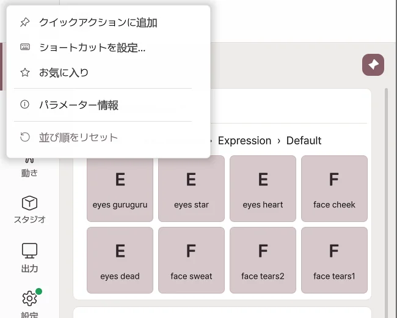
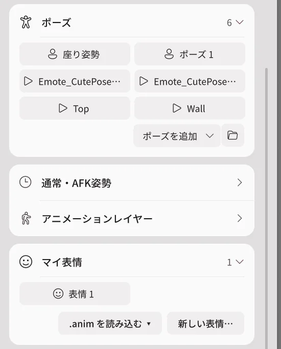
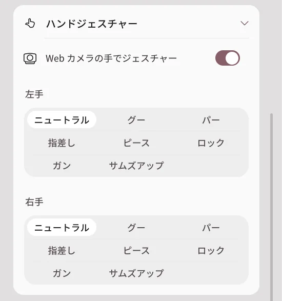

アバターメニュー
衣装・髪型・表情など、アバター作成者が設定した機能を使用します。モデルによってメニュー名や項目が異なります。
衣装と表情を変える
| 操作 | 動作方式 |
|---|---|
| オン・オフ | 一度押すとオンになり、もう一度押すとオフになります。衣装や装飾を変更する際に主に使用します。 |
| 押すボタン | 押している間のみ適用されます。離すと解除されます。 |
| 円形スライダー | ハンドルを動かして0〜100％の間で値を設定します。関連する色・サイズ・表情の強さなどが変わります。 |
| 方向パッド | ハンドルを左右・上下に動かして、さまざまな表情や値を一緒に調整します。 |
| フォルダ | サブメニューを開きます。戻るを押すと、上位メニューに戻ります。 |
よく使う項目をすぐ取り出す

- お気に入り: メニューの上の方で素早く見つけます。
- クイックアクションに追加: 下部ツールバーに実行ボタンを作ります。
- ショートカットキーの指定：キーボードで該当項目を実行します。
ショートカットキーでは押している間はキーを離すと解除され、トグルは再度押すまで維持されます。
姿勢と追跡

- ポーズタイルをタップして適用します。
- ポーズ横のカメラアイコンでトラッキング設定を展開します。
- フェイシャル・頭・腕・指・胴体をそれぞれオンまたはオフにします。
オンになっている部位は自分の動きを追従し、オフになっている部位は保存したポーズを維持します。例えば頭をオフにしてフェイシャルをオンにすると、首は固定したまま表情だけが動きます。
手のジェスチャー

左手と右手のグー・チョキ・パーなどを選びます。アバターに手の形ごとの表情が紐づいている場合、表情も一緒に変わります。ウェブカムの手の形でジェスチャーをオンにすると、実際の手の形を使用します。
私の表情
新しい表情を作成して顔の形を調整して保存するか、.anim 表情ファイルを読み込みます。作成した表情はタイルで適用し、右クリックでクイックアクションやショートカットに接続します。表情作成で手順を確認してください。
階層構造とシェイプキー
- 階層構造: アバターの部品をツリーで表示します。チェックで部品をオン・オフにします。
- 目のアイコン: 部品の動作は維持しながら画面上だけ非表示にします。
- メッシュ: 見た目を描く部品を検索します。
- シェイプキー: 顔や体の変形量を直接調整します。直接固定した値はトラッキングより優先される場合があります。
元に戻す
アバターパラメーター → デフォルトに戻すを押すと、衣装・表情などのメニュー値がアバターのデフォルト値に戻ります。